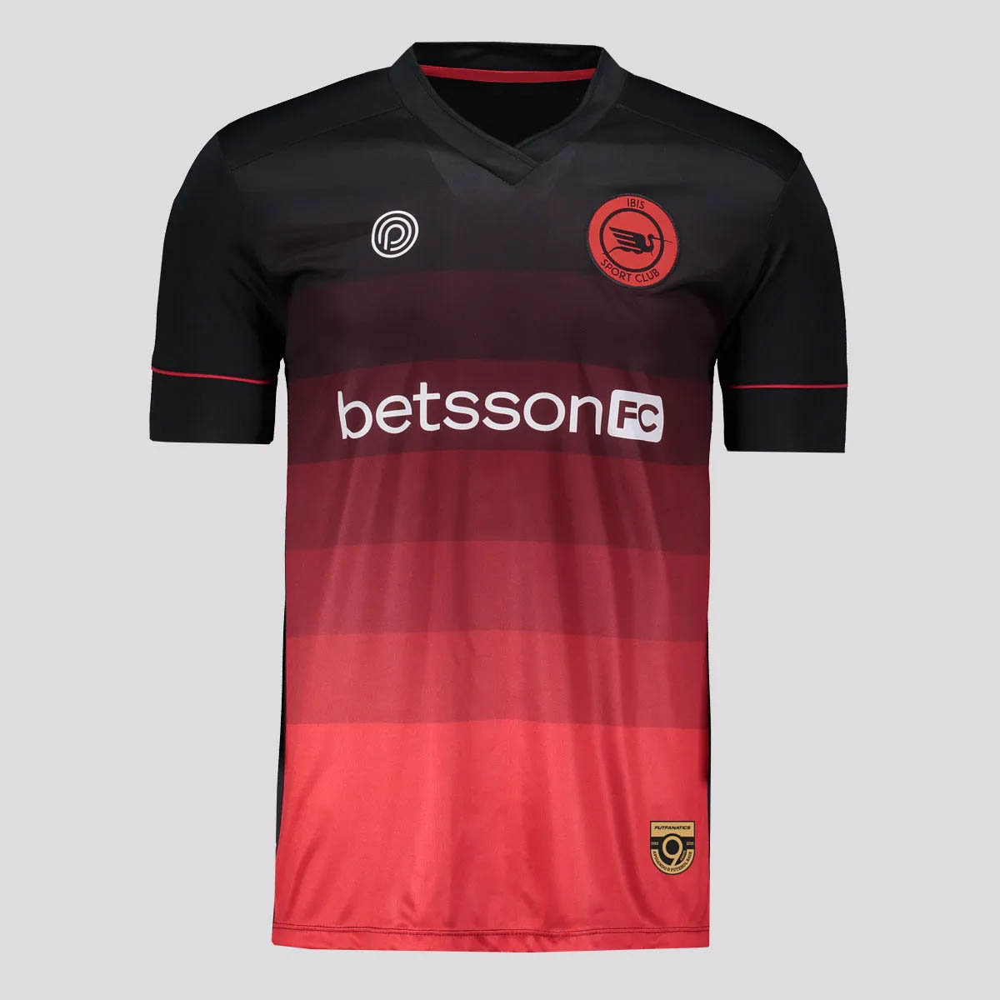
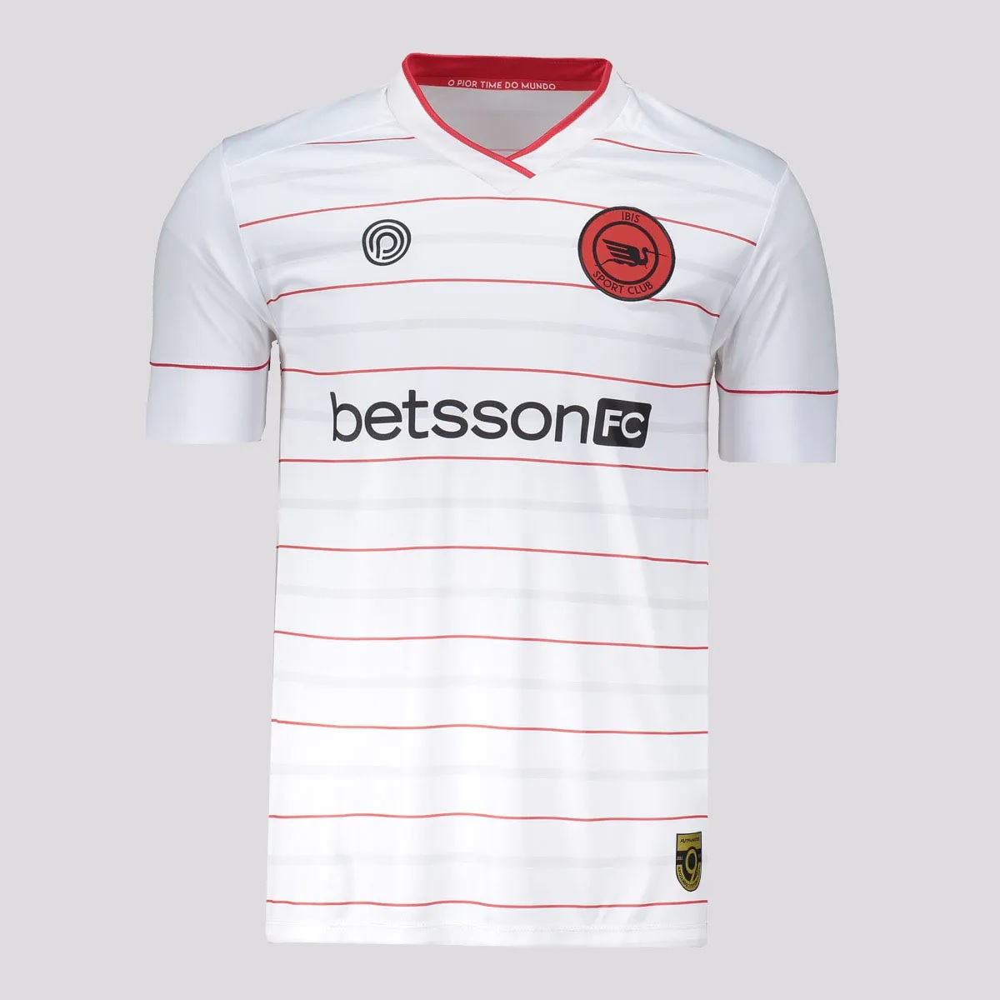

O Íbis Sport Club, é um clube de futebol de uma cidade chamada Paulista-PE, o mesmo ficou conhecido por receber o
título de "pior time do mundo" em 1984 após ficar 3 anos e 11 meses sem vencer uma partida oficial de futebol.
Para ter ideia, no dia 20 de Julho de 1980, o Íbis venceu o Ferroviário de Cabo de Santo Agostinho por 1 a 0.
Essa foi a última oportunidade em que o time venceu uma partida antes da sequência de 23 jogos sem vencer.
Somente no dia 17 de junho de 1984, quando a equipe de Paulista bateu o Santo Amaro por 3 a 1,
os torcedores puderam comemorar outra vez.
Uniforme
Uniforme Principal:

Para adquirir a sua, segue abaixo um link para venda em loja parceira: Clique Aqui
Uniforme Secundário:

Para adquirir a sua, segue abaixo um link para venda em loja parceira: Clique Aqui
Estamos sorteando um uniforme do Íbis:
Para participar do sorteio,
Clique aqui!!